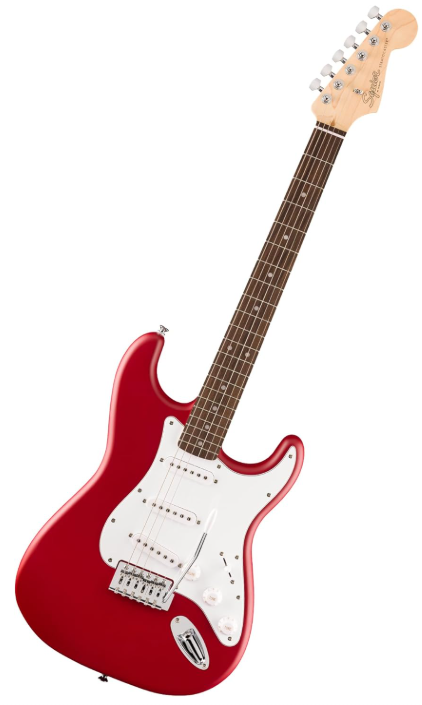

Guitar is a instrument used by many music artists, song writers, and bands. They are used in many music genres including pop, indie, country, folk, rock, classical, and more. There are generally 3 type of guitars most commonly used, these include electric guitar, acoustic guitar, and classical guitar. Here I will walk you through them so you can learn more about guitars! Hopefully you enjoy browsing my website!


electric guitars is one of the three main types of guitars. This guitar is unique from the other 2 as it uses magentic pickups to convert string vibtations to electrical signals. We use an amplifier to produce audible sound. Electrical guitars can also produce different tones or sound depending on what effects you use on it.
Click on this to learn more about electric guitars!
An acoustic guitar features a hollow body and it produces sound naturally through string vibration within the chamber. This type of guitar do not require a electrical amplification and it usually features six steel strings. The steel strings allow is to produce a more bright, loud, and resonant sound.
Click on this to learn more about acoustic guitars!

A classical guitar is kind of similar to an acoustic guitar except it often uses nylon strings not steel strings. Nylon strings produce a warmer and mellow tone compared to steel strings. This type of guitar is also usually used for classical music, flamenco, and latin styles rather than pop or rock.
Click on this to learn more about classical guitars!

The 3 guitars above are the main type of guitars. There are still many more stringed instruments similar to guitars. These may include banjo, bass, ukulele, mandolin, lute, and much more.
Click on this to learn more!| guitar | sound |
|---|---|
| Electric | Customizable sound based on equipment. Range from warm sounds to bright sounds |
| Acoustic | Usually have a bright and crisp sound |
| Classical | Has a soft, mellow, warm, and intimate sound |